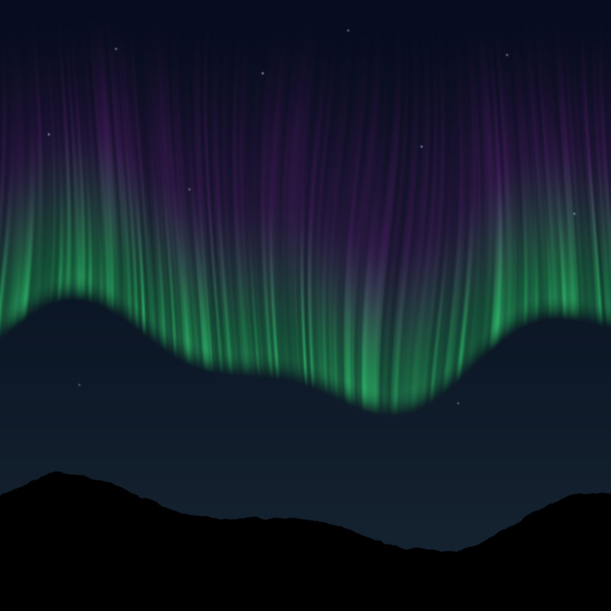
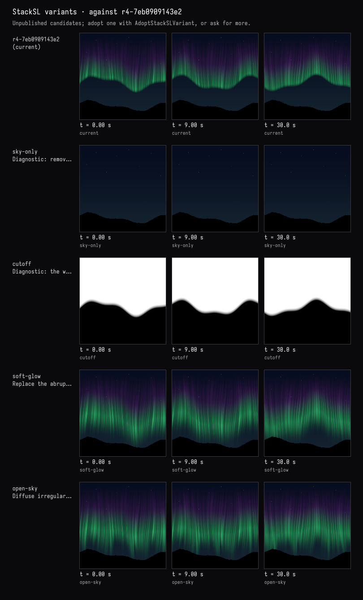
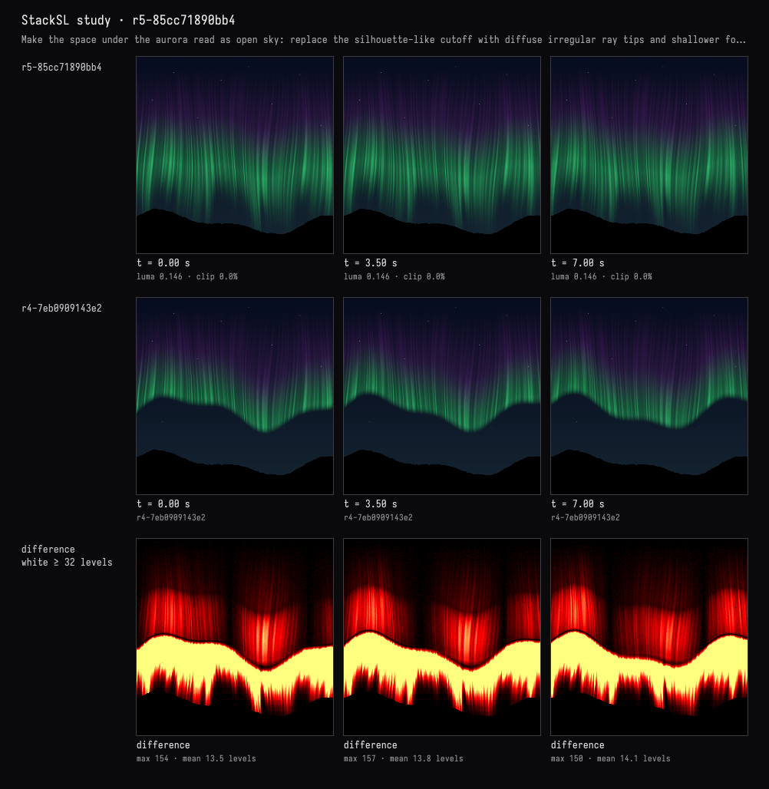
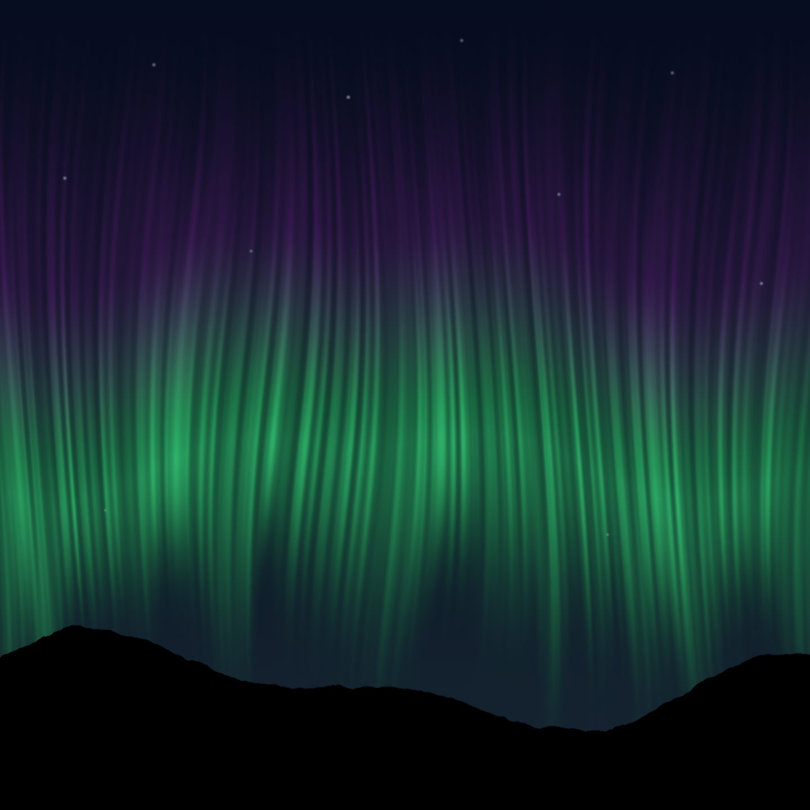

What is that mound?
The recorded exchange: the request, the tool activity, every image the tools returned to the model, and its reply. Expand tool activity to read the steps; open an image to see it full size.
In the middle, under the curtain, there's a big soft dark mound that reads like a second, nearer mountain — with stars in front of it. What is that shape, exactly? Show me what makes it, then make it read as open sky.
Tool activity · 9 steps
Starting AI conversation
InspectStackSLStudy finished (1 ms)
CaptureRenderWindowRequest finished (52 ms)
Waiting for model
Refining sky diagnostics
Refining sky diagnostics
I need to show the diagnostic variants for the sky without the mountains. I’ll explain the absence of auroras and adjust the envelope to create a coherent cutoff with a lower contrast background that’s uniformly darker. I'd aim for a smooth, lower Gaussian without a zero boundary, adjusting heights with an exponential fade. I should keep the original top smooth while reducing some edge amplitudes and increase focus on softening the envelope. The user wants to maintain the hill shape while enhancing the sky. Developing diagnostic variations
I need to start with diagnostics and variations consolidated into one with four labeled baseline diagrams, split into two aesthetics. It’s important to trace the points in the mound clearly and helpfully for the user. I want to explicitly show the tools used in the diagnostic rows to provide clarity. This will ensure the user has a clear understanding of the information presented, making it easier to interpret the results.
Next tool:
TryStackSLVariantsTryStackSLVariants finished (2373 ms)
AdoptStackSLVariant finished (777 ms)
CaptureRenderWindowRequest finished (555 ms)
Completed




That shape was negative space, not a second mountain. The aurora’s wavy lower-edge mask abruptly stopped the light, making the exposed sky look like a solid mound. The stars were background stars—not objects drawn in front of terrain.
The diagnostic views showed this directly: - Sky-only: no mound. - Cutoff mask: the exact mountain-like outline.
I replaced that cutoff with softly fading, variable-length rays and reduced the broad folds. The live view now shows light dissolving into sky rather than outlining another ridge. The actual hills remain still and pure black.
Compilation passed, and I checked multiple animation frames and the live window.